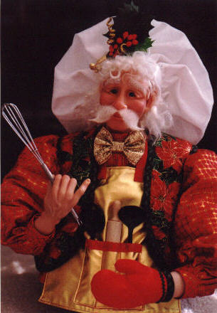
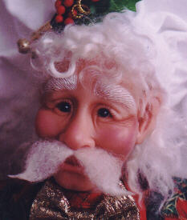

"Christmas Cookie Jar"
 This is a bit of a different kind of project that is a fun holiday diversion. This fellow is actually made over top of the lid to a large glass cookie jar. His apron would cover the top half or so.
